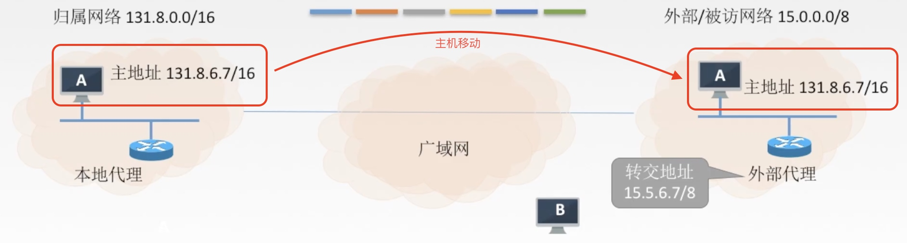

网络层
一 基本概念
主要任务是把分组从源端传到目的端，为分组交换网上的不同主机提供通信服务。
网络层传输单位是数据报
功能：
- 路由选择与分组转发 --- 最佳路径
- 异构网络互联
- 拥塞控制 --- 全局性
二 数据交换方式
2.1 电路交换
建立连接 => 通信 => 释放连接
e.g.：电话网络
特点：独占资源
优点：
- 通信时延小
- 有序传输
- 没有冲突
- 实时性强
缺点：
- 建立连接时间长
- 线路独占，使用效率低
- 灵活性差
- 无差错控制能力
2.2 报文交换
报文：源应用发送的信息整体。
特点：存储转发
优点：
- 无需建立连接
- 存储转发，动态分配线路
- 线路可靠性较高
- 线路利用率较高
- 多目标服务
缺点：
- 有存储转发时延
- 报文大小不定，需要网络节点有较大缓存空间
2.3 分组交换
分组：把大的数据块分割成小的数据块。
特点：分组存储转发
优点：相对于报文交换，存储管理更容易 --- 对缓存要求更小
缺点：
- 有存储转发时延 --- 会比报文交换小
- 需要传输额外的信息量
- 乱序到目的主机时，需对主机排序重组
tip：1字节（Byte）=8比特（bit）
2.3.1 数据报方式
数据报方式为网络层提供无连接服务。 --- 因特网
无连接服务：不事先为分组的传输确定传输路径，每个分组独立确定传输路径，不同分组传输路径可能不同。
特点：
- 无连接
- 每个分组携带源和目的地址
- 路由器根据分组的目的地址转发分组：
基于路由协议/算法构建转发表 => 检索转发表 => 每个分组独立选路
2.3.2 虚电路方式
虚电路方式为网络层提供连接服务。 --- 数据报方式和电路交换方式的结合
连接服务：首先为分组的传输确定传输路径（建立连接），然后沿改路径（连接）传输系列分组，系列分组传输路径相同，传输结束后拆除连接。
虚电路：一条源主机到目的主机类似于电路的路径（逻辑连接），路径上所有结点都要维持这条虚电路的建立，都维持一张虚电路表，每一项纪录了一个打开的虚电路信息。
建立连接（虚电路建立） => 数据传输 => 释放连接（虚电路释放）
2.3.3 数据报&虚电路 对比
2.4 对比
三 路由算法及路由协议概述
详见 八、九、十
3.1 路由算法
最佳路由：“最佳”只能是相对于某一种特定要求下得出的较为合理的选择而已。
3.1.1 静态路由算法
管理员手工配置路由信息。
缺点：路由更新慢，不适用大型网络。
3.1.2 动态路由算法
路由器间彼此交换信息，按照路由算法优化出路由表项。
缺点：算法复杂，增加网络负担
全局性：链路状态路由算法 OSPF
所有路由器掌握完整的网络拓扑和链路费用信息。 --- 适用大型网络
分散性：距离向量路由算法 RIP
路由器只掌握物理相连的邻居及链路费用。 --- 只适用小互联网
3.2 路由协议
分层次
自治系统AS：在单一的技术管理下的一组路由器，而这些路由器使用一种AS内部的路由选择协议和共同的度量以确定分组在该AS内的路由，同时还使用一种AS之间的路由协议以确定在AS之间的路由。
一个AS内的所有网络都属于一个行政单位来管辖，一个自治系统的所有路由器在本自治系统内都必须连通。
3.2.1 内部网关协议 IGP
一个AS内使用的 --- RIP、OSPF
3.2.2 外部网关协议 EGP
AS之间使用的 --- BGP
四 IP数据报

4.1 IP数据报格式

4.2 最大传输单元MTU
链路层数据帧可封装数据有上限。以太网的MTU是
1500字节--- 网络层数据分片
首部含义：
- 标识：同一数据报的分片使用同一标识。
- 标志：只有2位有意义
×__- 中间位DF (Don't Fragment)
DF=1，禁止分片
DF=0，允许分片 - 最低位MF ( More Fragment)
DF=1时才有效
MF=1，后面“还有分片”
MF=0，代表最后一片/没分片
- 中间位DF (Don't Fragment)
- 片偏移：指出较长分组分片后，某片在原分组中的相对位置。以8B为单位。
除了最后一个分片，每个分片长度一定是8B的整数倍。
4.3 IPV4地址


4.3.1 网络地址转换 NAT
NAT【Network Address Translation】
在专用网连接到因特网的路由器上安装NAT软件，安装了NAT软件的路由器叫NAT路由器，它至少有一个有效的外部全球IP地址。
4.3.2 子网划分
- 子网掩码 --- 区分子网号和主机号的划分点
4.3.3 无分类编址 CIDR
无分类域间路由选择【Classless Inter-Domain Routing】
- 消除了传统的A类、B类、C类地址以及划分子网的概念。
网络前缀 + 主机号 - 融合子网地址与子网掩码，方便子网划分。
CIDR地址块--- 网络前缀都相同
4.4 构成超网
将多个子网聚合成一个较大的子网，叫做构成超网/路由聚合。
方法：将网络前缀缩短。
最长前缀匹配：使用CIDR时，查找路由表可能得到的几个匹配结果，应该选择具有最长网络前缀的路由。前缀越长，地址块越小，路由越具体。
五 ARP协议
数据链路层 -> 网络层
地址解析协议【Address Resolution Protocol】
完成主机或路由器IP地址到MAC地址的映射。
5.1 发送数据的过程
局域网内传输：1 -> 3
- ARP协议自动进行
.五 DHCP协议
动态IP
动态主机设置协议【Dynamic Host Configuration Protocol】 --- 应用层协议
是应用层协议，使用客户/服务器方式，客户端和服务器通过广播方式进行交互，基于UDP。
DHCP提供即插即用联网的机制，主机可以从服务器动态获取IP地址、子网掩码、默认网关、DNS服务器名称与IP地址，允许地址复用，支持移动用户加入网络，支持在用地址续租。
- 主机广播DHCP发现报文
- DHCP服务器广播DHCP提供报文
- 主机广播DHCP请求报文
- DHCP服务器广播DHCP确认报文
六 ICMP协议
网络层 -> 传输层
互联网控制消息协议【Internet Control Message Protocol】
用于网际协议中发送控制消息，提供可能发生在通信环境中的各种问题反馈。
6.1 差错报文
有差错数据直接丢弃 --- 但需返回指定信息（差错报文）
差错报文类型：
- 终点不可达
- 源点抑制 --- 已不使用
- 时间超过
- 参数问题
- 改变路由（重定向）
差错报文数据字段：有差错的IP数据报 => ICMP报文
不发送ICMP差错报文的情况：
1.对ICMP差错报告报文不再发送ICMP差错报告报文。
2.对第一个分片的数据报片的所有后续数据报片都不发送ICMP差错报告报文。
3.对具有组播地址的数据报都不发送ICMP差错报告报文。
4.对具有特殊地址（如127.0.0.0或0.0.0.0）的数据报不发送ICMP差错报告报文。
6.2 询问报文
询问报文类型：
1.回送请求和回答报文
2.时间戳请求和回答报文
3.掩码地址请求和回答报文 --- 已不使用
4.路由器询问和通告报文 --- 已不使用
6.3 ICMP应用
- PING：测试两个主机之间的连通性，使用了ICMP回送请求和回答报文。
- Traceroute：跟踪一个分组从源点到终点的路径，使用了ICMP时间超过差错报告报文。
七 IPV6
地址分配128位（16B）
7.1 数据报格式
固定40B基本首部
7.2 区别
- IPV6将地址从32位（4B）扩大到128位（16B），更大的地址空间。
- IPV6将1Pv4的校验和字段彻底移除，以减少每跳的处理时间。
- IPV6将1Pv4的可选字段移出首部，变成了扩展首部，成为灵活的首部格式，路由器通常不对扩展首部进行检查，大大提高了路由器的处理效率。
- IPV6支持即插即用（即自动配置），不需要DHCP协议。
- IPV6首部长度必须是8B的整数倍，1Pv4首部是4B的整数倍。
- IPv6只能在主机处分片，1Pv4可以在路由器和主机处分片。
7.3 地址表示形式
7.4 IPv6向IPv4过渡的策略
- 双栈协议
- 隧道技术
八 RIP协议
路由信息协议【Routing Information Protocol】 --- 应用层协议
RIP是一种分布式的基于距离向量的路由选择协议，是因特网的协议标准。
简单
RIP允许一条路由最多只能包含15个路由器，因此距离为16表示网络不可达。
RIP协议只适用于小互联网。
8.1 信息交换特点
- 仅和相邻路由器交换信息
- 路由器交换的信息是自己的路由表。
- 每30s交换一次路由信息。
- 使用距离向量算法更新路由表 --- 详Google
8.2 报文格式

- 应用层协议，使用UDP传输数据
8.3 特点
当网络出现故障时，要经过较长的时间（例如数分钟）才能将信息传送到所有的路由器，“慢收敛”。
九 OSPF协议
开放式最短路径优先【Open Shortest Path First】 --- 网络层（/传输层）协议
“开放”标明OSPF协议不是受某一家厂商控制，而是公开发表的；“最短路径优先”是因为使用了Dijkstra提出的最短路径算法
SPF
特征：使用分布式的链路状态协议。
9.1 信息交换特点
- 使用洪泛法向自治系统内所有路由器发送信息。（广播）
- 发送与本路由器相邻的所有路由器的链路状态
- 只有当链路状态发生变化时，才再次发送信息。
- 使用链路状态路由算法更新链路状态。
最后，所有路由器都能建立一个链路状态数据库，即全网拓扑图。
9.2 链路状态路由算法
初始化：
- 每个路由器发现它的邻居结点【HELLO问候分组】，并了解邻居节点的网络地址。
- 设置到它的每个邻居的成本度量metric。
- 构造【DD数据库描述分组】，向邻站给出自己的链路状态数据库中的所有链路状态项目的摘要信息。
- 如果DD分组中的摘要自己都有，则邻站不做处理；如果有没有的或者是更新的，则发送【LSR链路状态请求分组】请求自己没有的和比自己更新的信息。
- 收到邻站的LSR分组后，发送【LSU链路状态更新分组】进行更新。
- 更新完毕后，邻站返回一个【LSAck链路状态确认分组】进行确认。
- 只要一个路由器的链路状态发生变化：
- 泛洪发送【LSU链路状态更新分组】进行更新。
- 更新完毕后，其他站返回一个【LSAck链路状态确认分组】进行确认。
- 使用Dijkstra根据自己的链路状态数据库构造到其他节点间的最短路径。
9.3 OSPF区域
为了使 OSPF 能够用于规模很大的网络，OSPF将一个自治系统再划分为若干个更小的范围，叫做区域。
每一个区域都有一个32 位的区域标识符（用点分十进制表示）

9.4 分组格式
- OSPF直接使用IP数据包传送。
9.5 特点
- 每隔30min，要刷新一次数据库中的链路状态。
- 由于一个路由器的链路状态只涉及到与相邻路由器的连通状态，因而与整个互联网的规模并无直接关系。因此当互联网规模很大时，OSPF 协议要比距离向量协议 RIP 好得多。
- OSPF不存在坏消息传的慢的问题，它的收敛速度很快。
十 BGP协议
边界网关协议【Border Gateway Protocol】 --- 应用层协议
10.1 信息交换特点
- 与其他AS的领站BGP发言人交换信息。
- 交换网络可达性的信息，即要到达某个网络所要经过的一系列AS。
- 发生变化时更新有变化的部分。
10.2 报文格式
一个 BGP 发言人与其他自治系统中的 BGP 发言人要交换路由信息，就要先建立TCP连接，即通过TCP传送，然后在此连接上交换 BGP 报文以建立 BGP 会话(session)，利用 BGP 会话交换路由信息。

- 应用层协议，借助TCP传送。
10.3 特点
- 支持
CIDR - 在BGP刚刚运行时，BGP 的邻站是交换整个的BGP路由表。但以后只需要在发生变化时更新有变化的部分。这样做对节省网络带宽和减少路由器的处理开销都有好处。
10.4 BGP-4的四种报文
- 0PEN（打开）报文：用来与相邻的另一个BGP发言人建立关系，并认证发送方。
- UPDATE（更新）报文：通告新路径或撤销原路径。
- KEEPALIVE（保活）报文：在无UPDATE时，周期性证实邻站的连通性；也作为OPEN的确认。
- NOTIFICATION（通知）报文：报告先前报文的差错；也被用于关闭连接。
三种路由协议的对比
十一 IP组播
IP数据包的三种传输方式：
- 单播：点对点
- 广播：点对多点（全部）
- 组播（多播）：点对多点（部分）
11.1 IP组播地址
IP组播地址让源设备能够将分组发送给一组设备。属于多播组的设备将被分配一个组播组IP地址（一群共同需求主机的相同标识）。
组播地址范围为224.0.0.0～239.255.255.255(D类地址），一个D类地址表示一个组播组。
只能用作分组的目标地址。源地址总是为单播地址。
1.组播数据报也是“尽最大努力交付”，不提供可靠交付，应用于UDP。
2.对组播数据报不产生ICMP差错报文。
3.并非所有D类地址都可以作为组播地址。
11.2 硬件组播
同单播地址一样，组播IP地址也需要相应的组播MAC地址在本地网络中实际传送帧。组播MAC地址以十六进制值01-00-5E打头，余下的6个十六进制位是根据IP组播组地址的最后23位转换得到的。
- 收到多播数据报的主机，还要在IP层利用软件进行过滤，把不是本主机要接收的数据报丢弃。 --- 解决D类IP地址前5位未映射的问题
11.3 因特网范围内组播
- IGMP协议：路由器内
- 组播路由选择协议：路由器之间
11.3.1 IGMP协议
网络层 -> 传输层
互联网组管理协议【Internet Group Management Protocol】
让路由器知道本局域网上是否有主机（的进程）参加或退出了某个组播组。
IGMP工作的两个阶段：
ROUND 1:
某主机要加入组播组时，该主机向组播组的组播地址发送一个IGMP报文，声明自己要称为该组的成员。
本地组播路由器收到IGMP报文后，要利用组播路由选择协议把这组成员关系发给因特网上的其他组播路由器。
ROUND 2:
本地组播路由器周期性探询本地局域网上的主机，以便知道这些主机是否还是组播组的成员。
只要有一个主机对某个组响应，那么组播路由器就认为这个组是活跃的：如果经过几次探询后没有一个主机响应，组播路由器就认为本网络上的没有此组播组的主机，因此就不再把这组的成员关系发给其他的组播路由器。
- 组播路由器知道的成员关系只是所连接的局域网中有无组播组的成员。
11.3.2 组播路由选择协议
目的时找出以源主机为根节点的组播转发树。
常用算法：
- 基于链路状态的路由选择
- 基于距离-向量的路由选择
- 协议无关的组播（稀疏/密集）
十二 移动IP
代理Proxy？
移动IP技术是移动节点(计算机/服务器等)以固定的网络IP地址，实现跨越不同网段的漫游功能，并保证了基于网络IP的网络权限在漫游过程中不发生任何改变。
移动结点： 具有永久IP地址的移动设备。
归属代理（本地代理）：一个移动结点拥有的就“居所”称为归属网络，在归属网络中代表移动节点执行移动管理功能的实体叫做归属代理。
外部代理（外地代理）：在外部网络中帮助移动节点完成移动管理功能的实体称为外部代理。
永久地址（归属地址/主地址）： 移动站点在归属网络中的原始地址。 --- 固定IP地址
转交地址（辅地址）：移动站点在外部网络使用的临时地址。
通信过程：

- A刚进入外部网络：
- 在外部代理登记获得一个转交地址，离开时注销。
- 外地代理向本地代理登记转交地址。
- B给A发送数据报：
- 本地代理截获数据报。
- 本地代理再封装数据报，新的数据报目的地址是转交地址，发给外部代理（隧道）。
- 外部代理拆封数据报并发给A。
- A给B发送数据报：
A用自己的主地址作为数据报源地址，用B的1P地址作为数据报的目的地址。 - A移动到了下一个网络：
- 在新外部代理登记注册一个转交地址。
- 新外部代理给本地代理发送新的转交地址（覆盖旧的）。
- 通信
- A回到了归属网络：
- A向本地代理注销转交地址。
- 按原始方式通信。
十三 网络层设备
13.1 路由器
路由器是一种具有多个输入端口和多个输出端口的专用计算机，其任务是转发分组。
-
输入端口对线路上收到的分组的处理:

- 输入端口中的查找和转发功能在路由器的交换功能中是最重要的。
-
输出端口将交换结构传送来的分组发送到线路:
- 若路由器处理分组的速率赶不上分组进入队列的速率，则队列的存储空间最终必定减少到零，这就使后面再进入队列的分组由于没有存储空间而只能被丢弃。
- 路由器中的输入或输出队列产生溢出是造成分组丢失的重要原因。
13.2 三层设备的区别
路由器： 可以互联两个不同网络层协议的网段。
网桥： 可以互联两个物理层和链路层不同的网段。
集线器： 不能互联两个物理层不同的网段。
13.3 路由表与路由转发
路由表 根据路由选择算法得出的，主要用途是路由选择，总用软件来实现。
转发表 由路由表得来，可以用软件实现，也可以用特殊的硬件来实现。转发表必须包含完成转发功能所必需的信息，在转发表的每一行必须包含从要到达的目的网络到输出端口和某些MAc地址信息的映射。